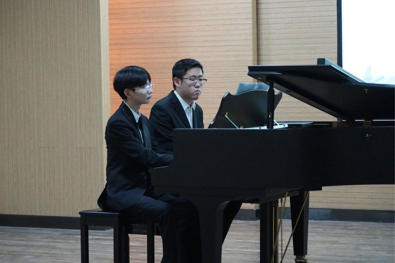
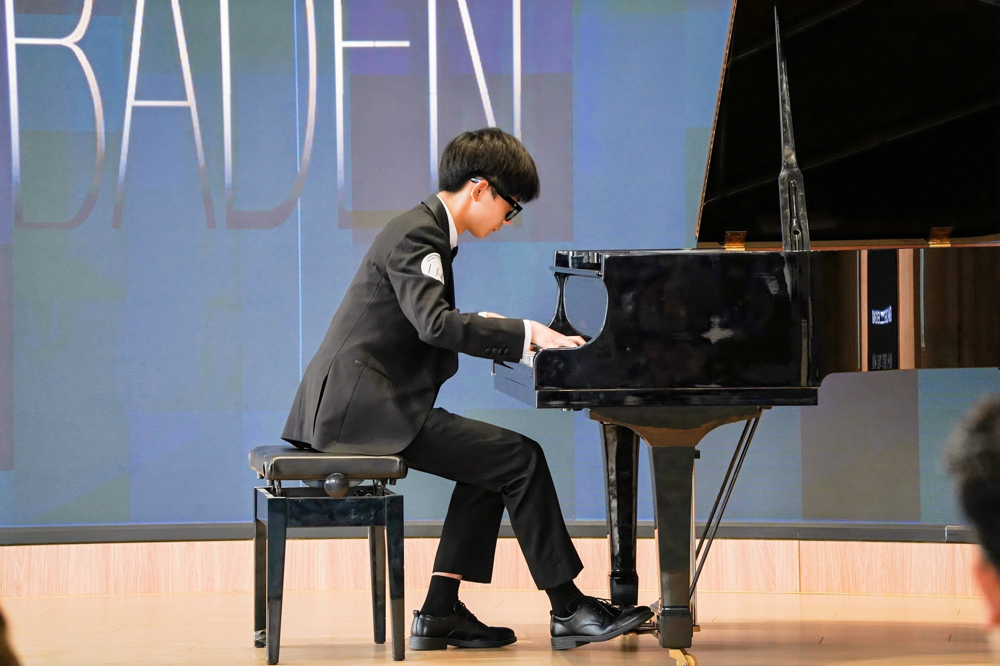
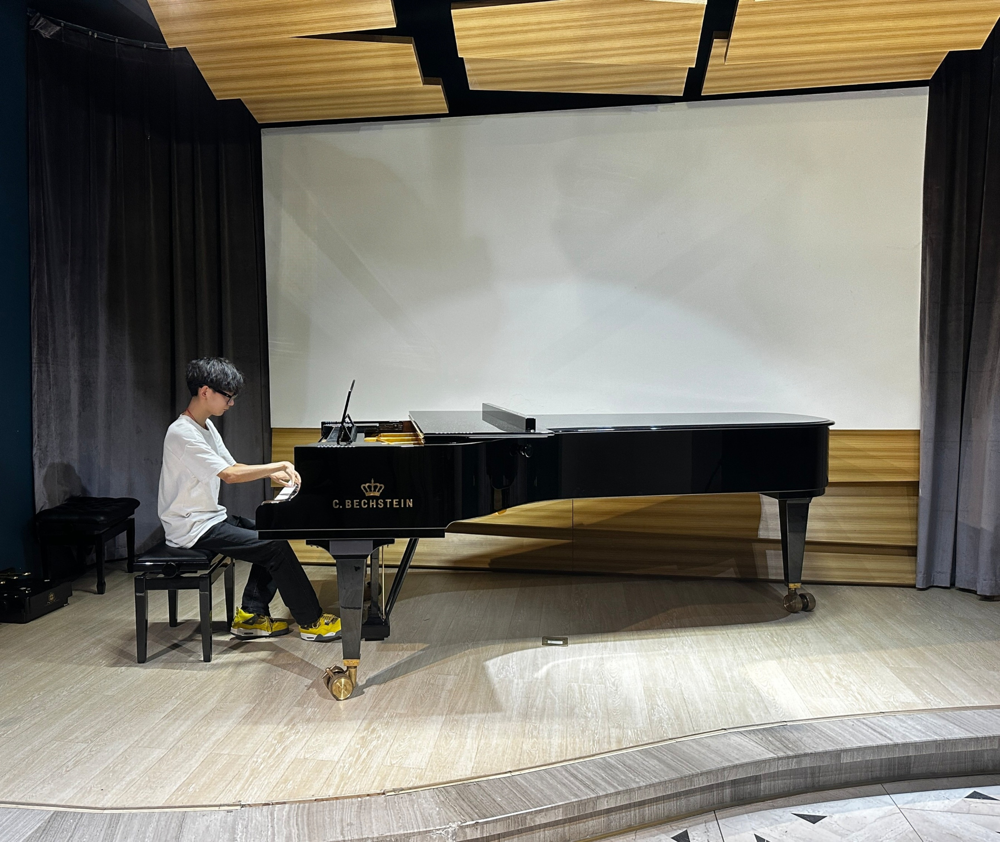
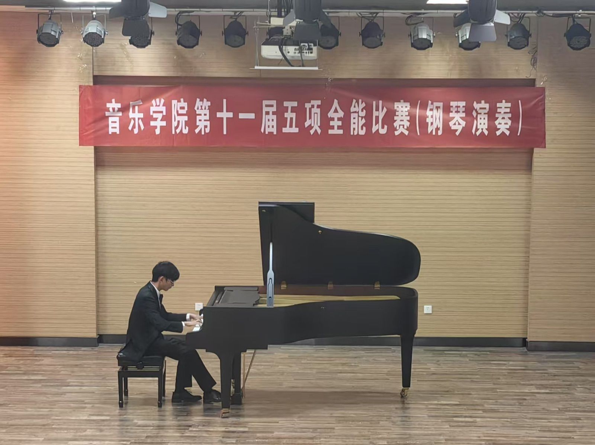
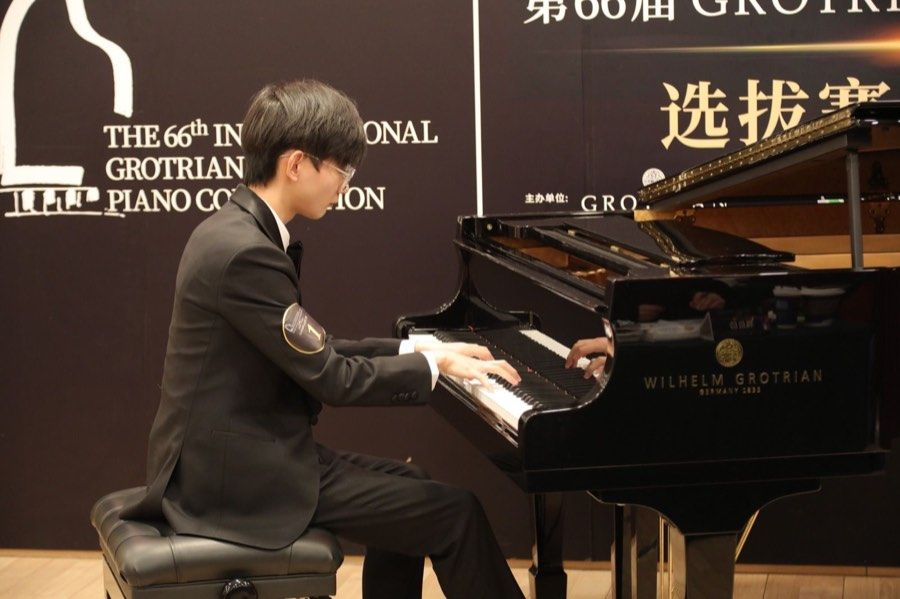
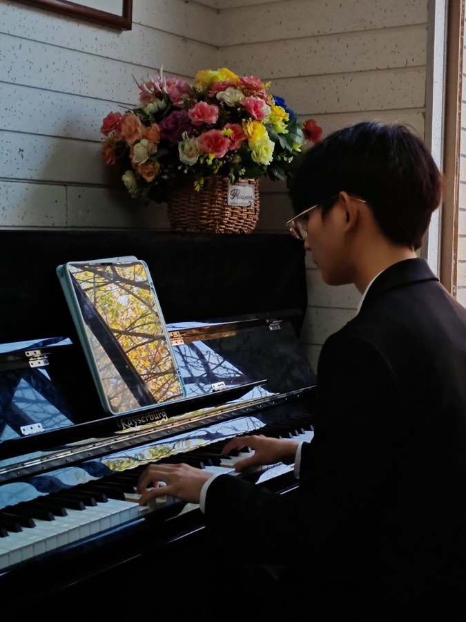

FRANZ ZHONG
The notes I handle no better than many pianists. But the pauses between the notes, ah, that is where the art resides.
The music is not in the notes, but in the silence between.
Simplicity is the highest goal, achievable when you have overcome all difficulties.
To send light into the darkness of men's hearts, such is the duty of the artist.
Music is a higher revelation than all wisdom and philosophy.
Music is the language of the spirit.
Where words fail, music speaks.
Music is the shorthand of emotion.
Without music, life would be a mistake.
Music expresses that which cannot be said and on which it is impossible to be silent.
Play always as if in the presence of a master.
Without craftsmanship, inspiration is a mere reed shaken in the wind.
134.5w 累计人气 · POPULARITY
Pianist · Music Educator
LIGHT & SHADOW

The music is not in the notes, but in the silence between.


To send light into the darkness of men's hearts — such is the duty of the artist.
OPUS
Music is a higher revelation than all wisdom and philosophy.



期待与您相遇
抖音私信